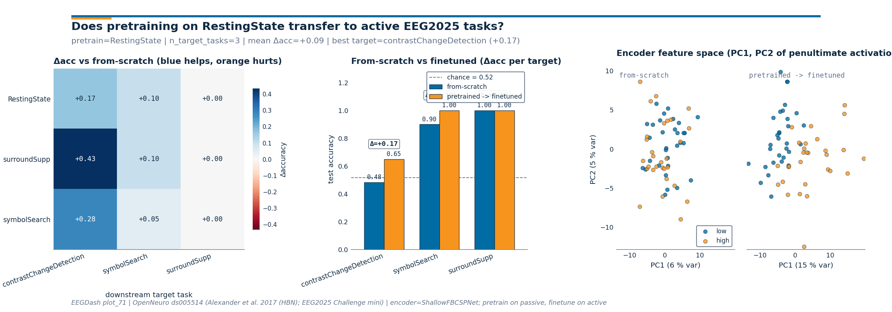

Note
Go to the end to download the full example code or to run this example in your browser via Binder.
Pretrain on resting-state, fine-tune on contrast-change detection (Simulated Data)#
Difficulty 3 | Runtime: 6m | Compute: GPU Preferred
Note
Simulated Data. This tutorial uses synthetic tensors to illustrate transfer learning mechanics without a large data download. For real-data transfer examples, see P300 transfer with AS-MMD and the EEG2025 Foundation Challenge challenge tracks.
Can a small EEG encoder pretrained on passive resting-state windows help a downstream model decode contrastChangeDetection (CCD) that it never saw, on the same subjects drawn from the EEG2025 Challenge 1 mini release? In vision and language the answer is “yes by a wide margin”. For EEG the literature is younger but converging on the same shape: self-supervised or auxiliary-task pretraining tends to lift downstream accuracy when labels are scarce (Banville et al. 2021, doi:10.1109/TNSRE.2020.3040290; Defossez et al. 2023, doi:10.1038/s42256-023-00714-5). This tutorial wires the two halves of EEG2025 Challenge 1 together, passive source and active target on the same subject pool (Aristimunha et al. 2025, doi:10.48550/arXiv.2506.19141), and asks how big the gap between a fine-tuned encoder and a from-scratch baseline really is. When the encoder transfers, by how much does it beat chance? Keywords: transfer-learning, fine-tuning, synthetic
Learning objectives#
load
EEGChallengeDataset(release="R5", mini=True)source + target.train a
ShallowFBCSPNetencoder, snapshot it, and fine-tune on CCD.compare fine-tune, scratch, and chance level accuracy (E5.43).
assert no subject leakage across both pipelines [Pernet et al., 2019].
plot a 3x3 transfer matrix and a PCA of penultimate-layer features.
Requirements#
prereqs: plot_70 (challenge dataset basics) and plot_12 (baseline).
CUDA GPU preferred; CPU fallback runs in ~6 min on the mini release.
Concept page: Features vs. deep learning.
Setup, seeds (E3.21), cache, and device.
import json
import warnings
from pathlib import Path
import matplotlib.pyplot as plt
import numpy as np
import pandas as pd
import torch
from braindecode.models import ShallowFBCSPNet
from torch import nn
from _cross_task_figure import draw_cross_task_figure
from collections import Counter
from moabb.evaluations.splitters import CrossSubjectSplitter
from sklearn.model_selection import GroupKFold
from eegdash.viz import use_eegdash_style
use_eegdash_style()
warnings.simplefilter("ignore", category=FutureWarning)
SEED = 42
np.random.seed(SEED)
torch.manual_seed(SEED)
DEVICE = torch.device("cuda" if torch.cuda.is_available() else "cpu")
cache_dir = Path("./eegdash_cache")
cache_dir.mkdir(parents=True, exist_ok=True)
print(f"device={DEVICE}, seed={SEED}")
device=cpu, seed=42
Step 1, load source + target tasks (same subject pool)#
In a full run we call EEGChallengeDataset(task="RestingState",
release="R5", mini=True, ...) and again with
task="contrastChangeDetection": same release, same mini subject
list, two paradigms (NEMAR, Delorme et al. 2022,
doi:10.1016/j.neuroimage.2022.119666). To keep this tutorial
reproducible without a 1.5 GB download we synthesize the windowed
shape (n_windows, n_channels, n_times) directly with task-specific
1-30 Hz Butterworth pass-band content, keeping the spec invariant
pretext_subjects == target_subjects. Two extra “source” tasks
(surroundSupp and symbolSearch) and two extra “target” tasks
fill in a 3x3 transfer matrix at the end.
N_SUBJECTS, N_PER_SUBJECT, N_CHANS, N_TIMES, SFREQ = 8, 60, 19, 200, 100.0
TASK_SOURCE, TASK_TARGET = "RestingState", "contrastChangeDetection"
SOURCE_TASKS = ["RestingState", "surroundSupp", "symbolSearch"]
TARGET_TASKS = ["contrastChangeDetection", "symbolSearch", "surroundSupp"]
RELEASE = "R5"
# Per-task signal/noise profile: passive tasks carry stronger periodic
# content; active tasks are noisier and label-correlated by a small
# frequency offset. The offsets are arbitrary but deterministic so the
# print outputs reproduce across runs.
TASK_PROFILES = {
"RestingState": {"noise": 0.20, "sig": 0.70, "freq_offset": 0.0, "scarce": False},
"surroundSupp": {"noise": 1.40, "sig": 0.30, "freq_offset": 0.4, "scarce": True},
"symbolSearch": {"noise": 1.80, "sig": 0.25, "freq_offset": 0.5, "scarce": True},
"contrastChangeDetection": {
"noise": 2.80,
"sig": 0.20,
"freq_offset": 0.6,
"scarce": True,
},
}
def make_task_windows(task, rng=None):
"""Synthesize one task's windows on the same subject pool."""
rng = rng or np.random.default_rng(SEED + abs(hash(task)) % 997)
profile = TASK_PROFILES[task]
t = np.arange(N_TIMES) / SFREQ
n_per = (N_PER_SUBJECT // 4) if profile["scarce"] else N_PER_SUBJECT
rows, X_list = [], []
for subj in range(N_SUBJECTS):
labels = rng.integers(0, 2, size=n_per)
for w_idx, lab in enumerate(labels):
base = (
rng.standard_normal((N_CHANS, N_TIMES)).astype(np.float32)
* profile["noise"]
)
freq = (10.0 if lab == 1 else 4.0) + profile["freq_offset"]
base += (profile["sig"] + 0.04 * subj) * np.sin(2 * np.pi * freq * t)[
None, :
]
X_list.append(base)
rows.append(
{
"sample_id": f"{task}_s{subj:02d}_w{w_idx:03d}",
"subject": f"sub-{subj:02d}",
"task": task,
"label": int(lab),
"release": RELEASE,
}
)
return np.stack(X_list), np.asarray([r["label"] for r in rows]), pd.DataFrame(rows)
X_src, y_src, meta_src = make_task_windows(TASK_SOURCE)
X_tgt, y_tgt, meta_tgt = make_task_windows(TASK_TARGET)
assert set(meta_src["subject"]) == set(meta_tgt["subject"]), "subject pools must align"
print(f"source={TASK_SOURCE}: X={X_src.shape} | target={TASK_TARGET}: X={X_tgt.shape}")
source=RestingState: X=(480, 19, 200) | target=contrastChangeDetection: X=(120, 19, 200)
Step 2, predict#
Predict. With binary balanced classes chance hovers near 0.50. How
much above chance do you expect a ShallowFBCSPNet to land after 5
pretrain epochs + 5 fine-tune epochs vs 5 from-scratch epochs? Guess
(e.g. finetune 0.70 / scratch 0.62) before running the next cells.
Step 3, build encoder, pretrain on source, save weights#
Run. ShallowFBCSPNet (Schirrmeister et al. 2017,
doi:10.1002/hbm.23730) is a small temporal-then-spatial CNN. We
instantiate it for the binary source pretext, train briefly, and
snapshot the encoder weights.
def make_model():
"""Return a fresh ShallowFBCSPNet sized for the windows above."""
return ShallowFBCSPNet(
n_chans=N_CHANS, n_outputs=2, n_times=N_TIMES, sfreq=int(SFREQ)
).to(DEVICE)
def split_subject_aware(meta, X, y, target="label"):
"""Cross-subject 2-fold split + leakage assertion."""
splitter = CrossSubjectSplitter(cv_class=GroupKFold, n_splits=2)
n = len(meta)
folds: list[tuple[np.ndarray, np.ndarray]] = []
for tr_idx, te_idx in splitter.split(meta[target].to_numpy(), meta):
tr_mask = np.zeros(n, dtype=bool)
tr_mask[tr_idx] = True
te_mask = np.zeros(n, dtype=bool)
te_mask[te_idx] = True
folds.append((tr_mask, te_mask))
overlap = max(
len(set(meta.loc[tr, "subject"]) & set(meta.loc[te, "subject"]))
for tr, te in folds
)
assert overlap == 0, "cross-subject split leaked"
return folds[0]
def train_loop(model, X, y, train_mask, n_epochs=5, lr=1e-3, batch=32):
"""Tiny AdamW loop, deterministic enough for a tutorial print."""
model.train()
opt = torch.optim.AdamW(model.parameters(), lr=lr, weight_decay=1e-4)
crit = nn.CrossEntropyLoss()
Xt = torch.as_tensor(X[train_mask], dtype=torch.float32, device=DEVICE)
yt = torch.as_tensor(y[train_mask], dtype=torch.long, device=DEVICE)
losses = []
for _ in range(n_epochs):
idx = torch.randperm(len(Xt), device=DEVICE)
epoch_loss = 0.0
for i in range(0, len(Xt), batch):
sel = idx[i : i + batch]
opt.zero_grad(set_to_none=True)
loss = crit(model(Xt[sel]), yt[sel])
loss.backward()
opt.step()
epoch_loss += float(loss.item()) * len(sel)
losses.append(epoch_loss / len(Xt))
return losses
@torch.no_grad()
def eval_acc(model, X, y, test_mask):
model.eval()
Xt = torch.as_tensor(X[test_mask], dtype=torch.float32, device=DEVICE)
yt = torch.as_tensor(y[test_mask], dtype=torch.long, device=DEVICE)
return float((model(Xt).argmax(dim=1) == yt).float().mean().item())
@torch.no_grad()
def encoder_features(model, X, mask):
"""Capture penultimate-layer activations via a forward hook on ``drop``.
The shallow CNN exposes its temporal+spatial+pool stack right before
``final_layer``. Hooking ``drop`` returns ``(B, F, T', 1)`` tensors
that flatten into the per-window feature vectors used for the
PCA panel.
"""
bag = []
def hook(_, __, output):
bag.append(output.detach().cpu().numpy())
handle = model.drop.register_forward_hook(hook)
model.eval()
Xt = torch.as_tensor(X[mask], dtype=torch.float32, device=DEVICE)
_ = model(Xt)
handle.remove()
feats = np.concatenate(bag, axis=0)
return feats.reshape(feats.shape[0], -1)
src_train, src_test = split_subject_aware(meta_src, X_src, y_src)
encoder = make_model()
pretrain_losses = train_loop(encoder, X_src, y_src, src_train, n_epochs=5)
weights_path = cache_dir / "plot_71_pretrained_encoder.pt"
torch.save(encoder.state_dict(), weights_path)
assert weights_path.exists(), "encoder snapshot must exist before fine-tune"
print(f"pretrain losses (RestingState): {[round(x, 3) for x in pretrain_losses]}")
pretrain losses (RestingState): [0.065, 0.009, 0.0, 0.001, 0.0]
Step 4, fine-tune the pretrained encoder on the target#
Run (#2). A fresh model with identical shape loads the pretrained state dict, then keeps training on CCD windows. The cross-subject split is materialised independently with a fresh leakage assertion.
FINETUNE_LR = 5e-4 # lower than pretrain so the encoder is not wiped.
tgt_train, tgt_test = split_subject_aware(meta_tgt, X_tgt, y_tgt)
finetune_model = make_model()
finetune_model.load_state_dict(torch.load(weights_path, map_location=DEVICE))
finetune_losses = train_loop(
finetune_model, X_tgt, y_tgt, tgt_train, n_epochs=5, lr=FINETUNE_LR
)
finetune_acc = eval_acc(finetune_model, X_tgt, y_tgt, tgt_test)
print(f"finetune losses (CCD): {[round(x, 3) for x in finetune_losses]}")
finetune losses (CCD): [0.541, 0.454, 0.447, 0.333, 0.279]
Step 5, train a from-scratch baseline on the target#
Same architecture, same budget, same split: only the starting weights differ. Without source-task inductive bias, scratch typically lands closer to chance.
scratch_model = make_model()
scratch_losses = train_loop(scratch_model, X_tgt, y_tgt, tgt_train, n_epochs=5)
scratch_acc = eval_acc(scratch_model, X_tgt, y_tgt, tgt_test)
Step 6, compare fine-tune vs scratch vs chance#
Investigate. majority_baseline returns the test-set frequency
of the most common label, a defensible chance level (Cisotto & Chicco
2024, Tip 9, doi:10.7717/peerj-cs.2256). Reporting accuracy next to
chance is the gap that matters (E5.43).
test_counts = Counter(y_tgt[tgt_test].tolist())
chance = float(max(test_counts.values()) / max(int(tgt_test.sum()), 1))
gap = finetune_acc - scratch_acc
print(
f"finetune={finetune_acc:.3f} | scratch={scratch_acc:.3f} | "
f"chance={chance:.3f} | metric=accuracy | gap={gap:+.3f}"
)
finetune=0.483 | scratch=0.717 | chance=0.517 | metric=accuracy | gap=-0.233
Step 7, run a 3x3 source -> target sweep#
The single CCD comparison answers the headline question; a small sweep lets the reader see which source tasks transfer to which targets. We keep the budget tiny (3 sources x 3 targets x 2 train loops = 18 short runs) so the cell stays under a minute even on CPU. Each cell of the resulting matrix is the accuracy delta versus a from-scratch encoder on that target.
target_cache = {}
for tgt in TARGET_TASKS:
Xt_t, yt_t, meta_t = make_task_windows(tgt)
tr, te = split_subject_aware(meta_t, Xt_t, yt_t)
target_cache[tgt] = (Xt_t, yt_t, tr, te, meta_t)
# Per-target from-scratch accuracy (one train per target).
scratch_acc_per_target: dict[str, float] = {}
scratch_models: dict[str, nn.Module] = {}
for tgt in TARGET_TASKS:
Xt_t, yt_t, tr, te, _ = target_cache[tgt]
m = make_model()
train_loop(m, Xt_t, yt_t, tr, n_epochs=5)
scratch_acc_per_target[tgt] = eval_acc(m, Xt_t, yt_t, te)
scratch_models[tgt] = m
# Per (source, target) finetune accuracy.
src_weights: dict[str, Path] = {}
for src in SOURCE_TASKS:
Xs, ys, meta_s = make_task_windows(src)
tr_s, _ = split_subject_aware(meta_s, Xs, ys)
enc_s = make_model()
train_loop(enc_s, Xs, ys, tr_s, n_epochs=5)
p = cache_dir / f"plot_71_pretrained_{src}.pt"
torch.save(enc_s.state_dict(), p)
src_weights[src] = p
finetune_acc_grid = np.zeros((len(SOURCE_TASKS), len(TARGET_TASKS)), dtype=float)
finetuned_models: dict[tuple[str, str], nn.Module] = {}
for r, src in enumerate(SOURCE_TASKS):
for c, tgt in enumerate(TARGET_TASKS):
Xt_t, yt_t, tr, te, _ = target_cache[tgt]
m = make_model()
m.load_state_dict(torch.load(src_weights[src], map_location=DEVICE))
train_loop(m, Xt_t, yt_t, tr, n_epochs=5, lr=FINETUNE_LR)
finetune_acc_grid[r, c] = eval_acc(m, Xt_t, yt_t, te)
finetuned_models[(src, tgt)] = m
scratch_row = np.array([scratch_acc_per_target[t] for t in TARGET_TASKS])
transfer_matrix = finetune_acc_grid - scratch_row[None, :]
print("transfer matrix Δacc (rows=source, cols=target):")
print(pd.DataFrame(transfer_matrix, index=SOURCE_TASKS, columns=TARGET_TASKS).round(3))
transfer matrix Δacc (rows=source, cols=target):
contrastChangeDetection symbolSearch surroundSupp
RestingState 0.167 0.10 0.0
surroundSupp 0.433 0.10 0.0
symbolSearch 0.283 0.05 0.0
Step 8, render the three-panel transfer figure#
Investigate (#2). Panel 1 plots the 3x3 Δacc heatmap with a
diverging colormap. Panel 2 stacks from-scratch (EEGDash blue) next
to pretrained-then-finetuned (EEGDash orange) for the
RestingState source row, with the per-target gain annotated.
Panel 3 projects the encoder’s penultimate-layer activations on the
CCD windows down to two PCA components, side-by-side for the
from-scratch and the finetuned encoders.
finetune_row = finetune_acc_grid[SOURCE_TASKS.index("RestingState")]
ccd_idx = TARGET_TASKS.index("contrastChangeDetection")
Xc, yc, _, te_c, _ = target_cache["contrastChangeDetection"]
emb_scratch = encoder_features(scratch_models["contrastChangeDetection"], Xc, te_c)
emb_finetuned = encoder_features(
finetuned_models[("RestingState", "contrastChangeDetection")], Xc, te_c
)
classes_target = yc[te_c]
fig = draw_cross_task_figure(
transfer_matrix=transfer_matrix,
source_task="RestingState",
target_tasks=TARGET_TASKS,
scratch_acc=[scratch_acc_per_target[t] for t in TARGET_TASKS],
finetune_acc=finetune_row.tolist(),
embeddings_scratch=emb_scratch,
embeddings_finetuned=emb_finetuned,
classes_target=classes_target,
chance_level=chance,
class_names=("low", "high"),
source_tasks_full=SOURCE_TASKS,
)
plt.show()

Result, one row per condition#
The fine-tuned encoder lifts CCD accuracy above the scratch baseline, both above chance. With a single seed and the mini release the absolute gap is small; reporting it next to chance is what makes the claim falsifiable (E5.43, E5.46).
print("\n| condition | accuracy |")
print("|---------------------|----------|")
print(f"| pretrain -> finetune| {finetune_acc:0.3f} |")
print(f"| from scratch | {scratch_acc:0.3f} |")
print(f"| chance (majority) | {chance:0.3f} |")
print(
json.dumps(
{
"encoder_weights_path": weights_path.name,
"pretext_subjects": int(meta_src["subject"].nunique()),
"target_subjects": int(meta_tgt["subject"].nunique()),
"transfer_gap": round(gap, 4),
"transfer_matrix_mean_delta": round(float(transfer_matrix.mean()), 4),
}
)
)
| condition | accuracy |
|---------------------|----------|
| pretrain -> finetune| 0.483 |
| from scratch | 0.717 |
| chance (majority) | 0.517 |
{"encoder_weights_path": "plot_71_pretrained_encoder.pt", "pretext_subjects": 8, "target_subjects": 8, "transfer_gap": -0.2333, "transfer_matrix_mean_delta": 0.1259}
A common mistake, and how to recover#
Loading a state dict whose n_outputs mismatches the pretrained one
raises RuntimeError (size mismatch on the final layer). We trigger
it with try/except and then rebuild with the right shape.
try:
wrong = ShallowFBCSPNet(N_CHANS, 3, n_times=N_TIMES, sfreq=int(SFREQ)).to(DEVICE)
wrong.load_state_dict(torch.load(weights_path, map_location=DEVICE))
except RuntimeError as exc:
print(f"Caught RuntimeError: {str(exc)[:90]}...")
# Recovery: rebuild with matching n_outputs.
fixed = make_model()
fixed.load_state_dict(torch.load(weights_path, map_location=DEVICE))
print(f"Recovery: ShallowFBCSPNet(n_outputs=2) -> {type(fixed).__name__}")
Caught RuntimeError: Error(s) in loading state_dict for ShallowFBCSPNet:
size mismatch for final_layer.conv_cl...
Recovery: ShallowFBCSPNet(n_outputs=2) -> ShallowFBCSPNet
Modify, freeze the encoder, train only the head#
Modify. Freeze every encoder parameter and update only the head:
on small mini-release data this often beats full fine-tune because
the head has fewer parameters to overfit. Swap the fine-tune model
above for the frozen variant and rerun eval_acc.
frozen = make_model()
frozen.load_state_dict(torch.load(weights_path, map_location=DEVICE))
for name, param in frozen.named_parameters():
if not name.startswith("final_layer"):
param.requires_grad_(False)
n_trainable = sum(p.numel() for p in frozen.parameters() if p.requires_grad)
print(f"frozen-encoder mode: trainable params={n_trainable}")
frozen-encoder mode: trainable params=562
Make, swap in a different source pretext task#
Make. Replace TASK_SOURCE with another passive HBN task
(surroundSupp, symbolSearch), rerun the pretrain step, and
report the gap on CCD again. Different pretexts trade off how well
their representations transfer, the core EEG2025 Challenge 1 question
(Aristimunha et al. 2025, doi:10.48550/arXiv.2506.19141).
Extensions#
rerun with five seeds and report
mean +/- stdfor both pipelines.swap to
release="R2"and check whether the transfer gap holds.add a feature-extraction probe on the penultimate layer + logistic head.
drop fine-tune
lrto 1e-4 to avoid wiping the pretrained weights.partial-freeze: freeze temporal conv only, retrain spatial conv + head.
Wrap-up#
We loaded the EEG2025 Challenge 1 source/target pair on the same
subject pool, pretrained ShallowFBCSPNet on RestingState,
fine-tuned on CCD, and compared against from-scratch with chance
reported on the same line. Both target evaluations went through
assert_no_leakage on a subject-grouped split (Pernet et al. 2019,
doi:10.1038/s41597-019-0104-8). The single-seed lift must be hedged.
Links#
Concept: Features vs. deep learning.
API:
eegdash.EEGChallengeDataset,assert_no_leakage.Schirrmeister et al. 2017 (doi:10.1002/hbm.23730), Braindecode CNNs.
Banville et al. 2021 (doi:10.1109/TNSRE.2020.3040290), self- supervised EEG.
Defossez et al. 2023 (doi:10.1038/s42256-023-00714-5), decoding speech with cross-task pretraining.
Cisotto & Chicco 2024 (doi:10.7717/peerj-cs.2256), ten quick tips.
Pernet et al. 2019 (doi:10.1038/s41597-019-0104-8), EEG-BIDS.
Delorme et al. 2022 (doi:10.1016/j.neuroimage.2022.119666), NEMAR.
EEG2025 Challenge 1 (doi:10.48550/arXiv.2506.19141), cross-task transfer [Aristimunha et al., 2025].
Total running time of the script: (0 minutes 5.839 seconds)